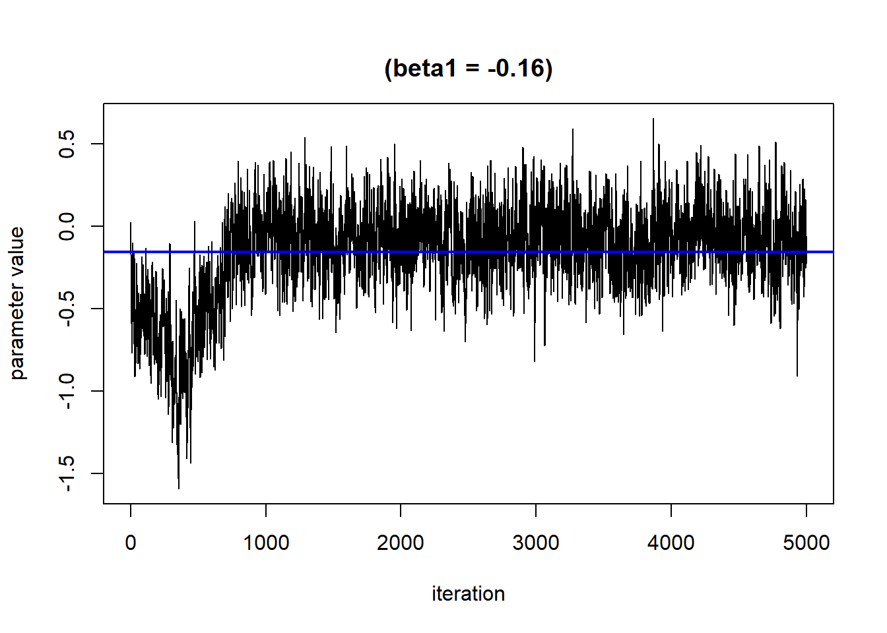

6.4 Mixtures Analysis Methods Part 2: Bayesian Kernel Machine Regression
This training module was developed by Dr. Lauren Eaves, Dr. Kyle Roell, and Dr. Julia E. Rager.
All input files (script, data, and figures) can be downloaded from the UNC-SRP TAME2 GitHub website.
Introduction to Training Module
In this training module, we will continue to explore mixtures analysis method, this time with a scripted example of Bayesian Kernel Machine Regression (BKMR). Please refer to TAME 2.0 Module 6.3, Mixtures Analysis Methods Part 1: Overview and Example with Quantile G-Computation for an overview of mixtures methodologies and a scripted example using Quantile g-Computation.
Introduction to Example Data
In this scripted example, we will use a dataset from the Extremely Low Gestational Age Newborn (ELGAN) cohort. Specifically, we will analyze metal mixtures assessed in cord tissue collected at delivery with neonatal inflammation measured over the first two weeks of life.
For more information on the cord tissue metals data, please see the following two publications:
- Eaves LA, Bulka CM, Rager JE, Galusha AL, Parsons PJ, O’Shea TM and Fry RC. Metals mixtures modeling identifies birth weight-associated gene networks in the placentas of children born extremely preterm. Chemosphere. 2022;137469. doi:10.1016/j.chemosphere.2022.137469.
- Bulka CM, Eaves LA, Gardner AJ, Parsons PJ, Kyle RR, Smeester L, O”Shea TM, Fry RC. Prenatal exposure to multiple metallic and metalloid trace elements and the risk of bacterial sepsis in extremely low gestational age newborns: A prospective cohort study. Front Epidemiol. 2022;2. doi:10.3389/fepid.2022.958389
For more information on the neonatal inflammation data, please see the following publication:
- Eaves LA, Enggasser AE, Camerota M, Gogcu S, Gower WA, Hartwell H, Jackson WM, Jensen E, Joseph RM, Marsit CJ, Roell K, Santos HP Jr, Shenberger JS, Smeester L, Yanni D, Kuban KCK, O’Shea TM, Fry RC. CpG methylation patterns in placenta and neonatal blood are differentially associated with neonatal inflammation. Pediatr Res. June 2022. doi:10.1038/s41390-022-02150-4
Here, we have a dataset of n=254 participants for which we have complete data on neonatal inflammation, cord tissue metals and key demographic variables that will be included as confounders in the analysis.
Extensive research in the ELGAN study has demonstrated that neonatal inflammation is predictive of cerebral palsy, ASD, ADHD, obesity, cognitive impairment, attention problems,cerebral white matter damage, and decreased total brain volume, among other adverse outcomes. Therefore identifying exposures that lead to neonatal inflammation and could be intervened upon to reduce the risk of neonatal inflammation is critical to improve neonatal health. Environmental exposures during pregnancy such as metals may contribute to neonatal inflammation. As is often the case in environmental health, these chemical exposures are likely co-occurring and therefore mixtures methods are needed.
Introduction to BKMR
BKMR offers a flexible, non-parametric method to estimate:
- The single exposure effect: odds ratio of inflammation when a single exposure is at its 75th percentile compared to its 25th percentile, with other exposures at their 50th percentile and covariates held constant
- The overall mixture effect: odds ratio of inflammation when all exposures are fixed at their 75th percentile compared to when all of the factors are fixed to their 25th percentile;
- The interactive effect: the difference in the single-exposure effect when all of the other exposures are fixed at their 75th percentile, as compared to when all of the other factors are fixed at their 25th percentile;
There are numerous excellent summaries of BKMR, including the publications in which it was first introduced:
- Bobb et al. Bayesian kernel machine regression for estimating the health effects of multi-pollutant mixtures
- Bobb et al. Statistical software for analyzing the health effects of multiple concurrent exposures via Bayesian kernel machine regression
And other vignettes and toolkits including:
- Jennifer Bobb’s Introduction to Bayesian kernel machine regression and the bkmr R package
- Andrea Bellavia’s Bayesian kernel machine regression
While BKMR can do many things other methods cannot, it can require a lot of computational resources and take a long time to run. Before working with your final dataset and analysis, if very large or complex, it is often recommended to start with a smaller sample to make sure everything is working correctly before starting an analysis that make takes days to complete.
Training Module’s Environmental Health Questions
This training module was specifically developed to answer the following questions, which mirror the questions in TAME 2.0 Module 6.3, but are just in a different order:
- Which of these chemicals has the strongest effect on neonatal inflammation risk?
- Which of these chemicals increases the risk of neonatal inflammation and which decreases the risk of neonatal inflammation?
- What is the risk of neonatal inflammation associated with exposure to each of manganese, copper, zinc, arsenic, selenium, cadmium, mercury, lead individually?
- What is the risk of neonatal inflammation associated with combined exposure to manganese, copper, zinc, arsenic, selenium, cadmium, mercury, lead (ie. a mixture)? and in addition to the questions addressed in Mixtures Methods 1, we additionally can answer:
- Are there interactions among manganese, copper, zinc, arsenic, selenium, cadmium, mercury, lead in relation to neonatal inflammation?
Run BKMR
Workspace Preparation
Install packages as needed, then load the following packages:
#load packages
library(tidyverse)
library(ggplot2)
library(knitr)
library(yaml)
library(rmarkdown)
library(broom)
library(ggpubr)
library(bkmr)Optionally, you can also create a current date variable to name output files, and create an output folder.
Data Import
## [1] "X" "id" "inflam_intense" "race1"
## [5] "sex" "gadays" "magecat" "medu"
## [9] "smoke" "Mn_ugg" "Cu_ugg" "Zn_ugg"
## [13] "As_ngg" "Se_ugg" "Cd_ngg" "Hg_ngg"
## [17] "Pb_ngg"## X id inflam_intense race1 sex gadays magecat medu smoke Mn_ugg Cu_ugg
## 1 1 1100751 0 3 1 195 2 1 0 0.272 3.229
## 2 3 1100841 0 2 0 171 3 3 0 0.505 2.868
## 3 4 1100852 0 1 0 171 3 3 0 0.387 5.504
## 4 5 1100853 0 1 0 171 3 3 0 0.441 4.295
## 5 6 1100872 0 1 1 167 2 4 0 0.457 14.310
## 6 7 1100881 0 1 1 194 2 2 0 0.388 3.816
## Zn_ugg As_ngg Se_ugg Cd_ngg Hg_ngg Pb_ngg
## 1 77.6 6.29 0.86 0.78 17.23 26.2
## 2 58.1 8.04 0.93 3.79 20.35 305.3
## 3 60.9 3.48 1.02 1.19 20.30 50.3
## 4 56.8 4.63 1.08 1.37 21.06 26.5
## 5 133.4 7.48 1.98 3.74 12.33 72.9
## 6 81.4 3.89 1.04 1.17 10.54 35.3The variables in this dataset include sample and demographic information and cort tissue metal exposure in \(mu\)g/g or ng/g.
Sample and Demographic Variables
- “id”: unique study ID
outcome: - “inflam_intense”: 1= high inflammation, 0=low inflammation covariates:
- “race1”: maternal race, 1=White, 2=Black, 0=Other
- “sex”: neonatal sex, 0=female, 1=male
- “gadays”: gestational age at delivery in days
- “magecat”: maternal age, 1= <21, 2=21-35, 3= > 35
- “medu”:maternal education: 1= <12, 2=12, 3=13-15, 4=16, 5= >16
- “smoke”: maternal smoking while pregnant, 0=no, 1=yes
Exposure Variables
- “Mn_ugg”
- “Cu_ugg”
- “Zn_ugg”
- “As_ngg”
- “Se_ugg”
- “Cd_ngg”
- “Hg_ngg”
- “Pb_ngg”
There are many steps prior to the modeling steps outlined below. These are being skipped for educational purposes. Additional steps include assessment of normality and transformations as needed, generation of a demographics table and assessing for missing data, imputation of missing data if needed, visualizing trends and distributions in the data, assessing correlations between exposures, functional form assessments, and decisions regarding what confounders to include.
In addition, it is highly recommended to conduct single-contaminant modeling initially to understand individual chemical relationships with the outcomes of focus before conducting mixtures assessment. For an example of this, see TAME 2.0 Module 6.3, Mixtures Analysis Methods Part 1: Overview and Example with Quantile G-Computation. BKMR, as a flexible non-parametric modeling approach, does not allow for classical null-hypothesis testing, and 95% CI are interpreted as credible intervals, not confidence intervals. One approach therefore could be to explore non-linearities and interactions within BKMR to then validate generated hypotheses using quantile g-computation.
Fit the BKMR Model
First, define a matrix/vector of the exposure mixture, outcome, and confounders/covariates. BKMR performs better when the exposures are on a similar scale and when there are not outliers. Thus, we center and scale the exposure variables first. As noted above, in a complete analysis, thorough examination of exposure variable distributions, including outliers and normality, would be conducted before any exposure-outcome modeling. For more information on normality testing, see TAME 2.0 Module 3.3, Normality Tests and Data Transformations.
First, we’ll assign the matrix variables to their own data frame and scale the data.
#exposure mixture variables
mixture <- as.matrix(cohort[,10:17])
mixture <- log(mixture)
mixture <-scale(mixture, center=TRUE)
summary(mixture)## Mn_ugg Cu_ugg Zn_ugg As_ngg
## Min. :-3.3963 Min. :-2.6253 Min. :-2.0090 Min. :-1.9903
## 1st Qu.:-0.5536 1st Qu.:-0.6558 1st Qu.:-0.5211 1st Qu.:-0.6150
## Median :-0.1527 Median :-0.1452 Median :-0.1559 Median :-0.1327
## Mean : 0.0000 Mean : 0.0000 Mean : 0.0000 Mean : 0.0000
## 3rd Qu.: 0.4048 3rd Qu.: 0.6038 3rd Qu.: 0.3180 3rd Qu.: 0.5385
## Max. : 7.3059 Max. : 4.3512 Max. : 5.4446 Max. : 3.8928
## Se_ugg Cd_ngg Hg_ngg Pb_ngg
## Min. :-3.468991 Min. :-1.5007 Min. :-2.34070 Min. :-2.0013
## 1st Qu.:-0.567767 1st Qu.:-0.6649 1st Qu.:-0.70797 1st Qu.:-0.6711
## Median : 0.005317 Median :-0.2632 Median :-0.01572 Median :-0.1036
## Mean : 0.000000 Mean : 0.0000 Mean : 0.00000 Mean : 0.0000
## 3rd Qu.: 0.629320 3rd Qu.: 0.3312 3rd Qu.: 0.67767 3rd Qu.: 0.5312
## Max. : 4.328620 Max. : 5.3945 Max. : 2.74547 Max. : 3.8156Then, we’ll define the outcome variable and ensure it is the proper class and leveling.
#outcome variable
cohort$inflam_intense <-as.factor(cohort$inflam_intense)
cohort$inflam_intense <- relevel(cohort$inflam_intense, ref = "0")
y<-as.numeric(as.character(cohort$inflam_intense))Next, we’ll assign the covariates to a matrix.
Then, we can fit the BKMR model. Note that this script will take a few minutes to run.
set.seed(111)
fitkm <- kmbayes(y = y, Z = mixture, X = covariates, iter = 5000, verbose = FALSE, varsel = TRUE, family="binomial", est.h = TRUE)## Fitting probit regression model## Iteration: 500 (10% completed; 18.60599 secs elapsed)## Iteration: 1000 (20% completed; 42.14896 secs elapsed)## Iteration: 1500 (30% completed; 1.19931 mins elapsed)## Iteration: 2000 (40% completed; 1.67059 mins elapsed)## Iteration: 2500 (50% completed; 2.16125 mins elapsed)## Iteration: 3000 (60% completed; 2.64141 mins elapsed)## Iteration: 3500 (70% completed; 3.11403 mins elapsed)## Iteration: 4000 (80% completed; 3.54858 mins elapsed)## Iteration: 4500 (90% completed; 4.03024 mins elapsed)## Iteration: 5000 (100% completed; 4.49908 mins elapsed)For full information regarding options for the kmbayes function, refer to the BKMR reference manual: https://cran.r-project.org/web/packages/bkmr/bkmr.pdf
Assess Variable Importance
BKMR conducts a variable selection procedure and generates posterior inclusion probabilities (PIP). The larger the PIP, the more a variable is contributing to the overall exposure-outcome effect. These are relative to each other,so there is no threshold as to when a variable becomes an “important” contributor (similar to the weights in quantile g-computation).
## variable PIP
## 1 Mn_ugg 0.1468
## 2 Cu_ugg 0.1568
## 3 Zn_ugg 0.4760
## 4 As_ngg 0.0820
## 5 Se_ugg 0.1668
## 6 Cd_ngg 0.3204
## 7 Hg_ngg 0.1848
## 8 Pb_ngg 0.1676Relative to each other, the contributions to the effect of the mixture on neonatal inflammation are shown above for each component of the mixture. Note that if a variable PIP=0, BKMR will drop it from the model and the overall mixture effect will not include this exposure.
Answer to Environmental Health Question 1
With this, we can answer Environmental Health Question #1: Which of these chemicals has the strongest effect on neonatal inflammation risk?
Answer: Based on the PIPs: Cadmium.
Assess Model Convergence
We can use trace plots to evaluate how the parameters in the model converge over the many iterations. We hope to see that the line moves randomly but centers around a straight line

Based on this plot, it looks like the burn in period is roughly 1000 iterations. We will remove these from the results.
Presenting Model Results
Single exposure effects
As described above, one way to examine single effects is to calculate the odds ratio of inflammation when a single exposure is at its 75th percentile compared to its 25th percentile, with other exposures are at their 50th percentile and covariates are held constant.
Here, we use the PredictorResponseUnivar() function to generate a dataset that details, at varying levels of each exposure (“z”), the relationship between that exposure and the outcome, holding other exposures at their 50th percentile and covariates constant. This relationship is given by a beta value, which because we have a binomial outcome and fit a probit model represents the log(odds) (“est”). The standard error for the beta value is also calculated (“se”).
pred.resp.univar <- PredictorResponseUnivar(fit=fitkm, sel=sel,
method="approx", q.fixed = 0.5)
head(pred.resp.univar)## # A tibble: 6 × 4
## variable z est se
## <fct> <dbl> <dbl> <dbl>
## 1 Mn_ugg -3.40 -0.150 0.246
## 2 Mn_ugg -3.18 -0.145 0.231
## 3 Mn_ugg -2.96 -0.140 0.216
## 4 Mn_ugg -2.74 -0.135 0.201
## 5 Mn_ugg -2.52 -0.130 0.187
## 6 Mn_ugg -2.30 -0.125 0.173We can then plot these data for each exposure to visualize the exposure-response function for each exposure.
ggplot(pred.resp.univar, aes(z, est, ymin = est - 1.96*se,
ymax = est + 1.96*se)) +
geom_smooth(stat = "identity") + ylab("h(z)") + facet_wrap(~ variable) 
Then, we can generate a dataset that contains for each exposure (“variable”), the log(OR) (“est”) (and its standard deviation (“sd”)) corresponding to the odds of neonatal inflammation when an exposure is at its 75th compared to the odds when at the 25th percentile. The log(OR) is estimated at three levels of the other exposures (25th, 50th and 75th percentiles). We can use this dataset to identify odds ratios for neonatal inflammation (comparing the 75th to 25th percentile odds) for each exposure at differing levels of the other exposures. These odds ratios approximate risk, whereby an odds ratio >1 means there is increased risk of neonatal inflammation when that exposure is at its 75th percentile compared to its 25th percentile. We can then plot these data to see the logOR for each metal in relation to neonatal inflammation at varying levels of the rest of the exposures.
risks.singvar <- SingVarRiskSummaries(fit=fitkm, qs.diff = c(0.25, 0.75),
q.fixed = c(0.25, 0.50, 0.75),
method = "approx")
ggplot(risks.singvar, aes(variable, est, ymin = est - 1.96*sd,
ymax = est + 1.96*sd, col = q.fixed)) +
geom_hline(aes(yintercept=0), linetype="dashed", color="gray") +
geom_pointrange(position = position_dodge(width = 0.75)) +
coord_flip() + theme(legend.position="none")+scale_x_discrete(name="") +
scale_y_continuous(name="estimate") Answer to Environmental Health Question 2
With this, we can answer Environmental Health Question #2: Which of these chemicals increases the risk of neonatal inflammation and which decreases the risk of neonatal inflammation?
Answer: At all levels of the other exposures, lead, cadmium, selenium, arsenic and zinc reduce the odds of neonatal inflammation, while manganese and mercury appear to increase the odds of neonatal inflammation. Copper appears has a null effect. Notice that the credibility intervals however for all metals span the null meaning we are not confident in the independent effect of any of the metals.
Answer to Environmental Health Question 3
With this, we can also answer also Environmental Health Question #3: What is the risk of neonatal inflammation associated with exposure to each of manganese, copper, zinc, arsenic, selenium, cadmium, mercury, lead individually?
Answer: As an example, take manganese: when all other exposures are at their 50th percentile, the log(OR) for Mn comparing being at the 75th to the 25th percentile is 0.024, which equals an odds ratio of 1.02. From this, you should be able to calculate the odds ratios for the other metals yourself.
Calculating the overall mixture effect
Next, we can generate a dataset that details the effect (ie. log(OR) (“est”) and corresponding standard deviation (“sd”)) on neonatal inflammation of all exposures when at a particular quantile (“quantile”) compared to all exposures being at the 50th percentile. We can use this dataset to identify odds ratios for neonatal inflammation upon simultaneous exposure to the entire mixture for different quantile threshold comparisons. These odds ratios approximate risk, whereby an odds ratio >1 means there is increased risk of neonatal inflammation when the entire mixture is set at the index quantile, compared to the 50th percentile. We can also plot these results to visualize the overall mixture effect dose-response relationship.
risks.overall <- OverallRiskSummaries(fit=fitkm, qs=seq(0.25, 0.75, by=0.05),
q.fixed = 0.5, method = "approx",
sel=sel)
ggplot(risks.overall, aes(quantile, est, ymin = est - 1.96*sd,
ymax = est + 1.96*sd)) +
geom_hline(yintercept=00, linetype="dashed", color="gray") +
geom_pointrange() + scale_y_continuous(name="estimate") Answer to Environmental Health Question 4
With this, we can answer Environmental Health Question #4: What is the risk of neonatal inflammation associated with combined exposure to manganese, copper, zinc, arsenic, selenium, cadmium, mercury, lead (ie. a mixture)?
Answer: When every exposure is at its 25th percentile concentration compared to their 50th percentile concentration, the odds ratio for neonatal inflammation is 1.11 (exp(0.10073680)). When every exposure is at its 75th percentile concentration compared to their 50th percentile concentration, the odds ratio for neonatal inflammation is 0.87 (exp(-0.12000889)).
Evaluating interactive effects
To understand bivariate interactions, we can generate a dataset that for each pairing of exposures details at varying levels of both exposures, the log(odds) (“est”, and associated standard deviation (“sd”)) of neonatal inflammation when all the other exposures are held constant. These plots can be tricky to interpret, so another way of looking at these results is to take “cross sections” at specific quantiles of the second exposure (see next step).
pred.resp.bivar <- PredictorResponseBivar(fit=fitkm, min.plot.dist = 1,
sel=sel, method="approx")
ggplot(pred.resp.bivar, aes(z1, z2, fill = est)) +
geom_raster() +
facet_grid(variable2 ~ variable1) +
scale_fill_gradientn(colours=c("#0000FFFF","#FFFFFFFF","#FF0000FF")) +
xlab("expos1") +
ylab("expos2") +
ggtitle("h(expos1, expos2)")Next, we generate a dataset that includes for each pairing of exposures, the log(odds) (“est” and associated standard deviation “sd”) of neonatal inflammation at varying concentrations (“z1”) of the first exposure (“variable 1”) when the second exposure (“variable 2” is at its 25th, 50th and 75th percentile (“quantile”).
pred.resp.bivar.levels <- PredictorResponseBivarLevels(pred.resp.df=
pred.resp.bivar, Z = mixture, both_pairs=TRUE,
qs = c(0.25, 0.5, 0.75))
ggplot(pred.resp.bivar.levels, aes(z1, est)) +
geom_smooth(aes(col = quantile), stat = "identity") +
facet_grid(variable2 ~ variable1) +
ggtitle("h(expos1 | quantiles of expos2)") +
xlab("expos1")There is evidence of an interactive effect between two exposures when the exposure-response function for exposure 1 varies in form between the different quantiles of exposure 2. You can also zoom in on one plot, for example:
HgCd <- pred.resp.bivar.levels %>%
filter(variable1=="Hg_ngg") %>%
filter(variable2=="Cd_ngg")
ggplot(HgCd, aes(z1, est)) +
geom_smooth(aes(col = quantile), stat = "identity") +
ggtitle("h(expos1 | quantiles of expos2)") +
xlab("expos1")
CdHg <- pred.resp.bivar.levels %>%
filter(variable1=="Cd_ngg") %>%
filter(variable2=="Hg_ngg")
ggplot(CdHg, aes(z1, est)) +
geom_smooth(aes(col = quantile), stat = "identity") +
ggtitle("h(expos1 | quantiles of expos2)") +
xlab("expos1")To visualize interactions between one exposure and the rest of the exposure components, we generate a dataset that details the difference in each exposure’s (“variable”) log(OR) comparing 75th to 25th percentile (“est”, and associated standard deviation “sd”) when the other exposure components are at their 75th versus 25th percentile. Perhaps more intuitively, these estimates represent the blue - red points plotted in the second figure under the single exposure effects section.
risks.int <- SingVarIntSummaries(fit=fitkm, qs.diff = c(0.25, 0.75),
qs.fixed = c(0.25, 0.75))
ggplot(risks.int, aes(variable, est, ymin = est - 1.96*sd,
ymax = est + 1.96*sd)) +
geom_pointrange(position = position_dodge(width = 0.75)) +
geom_hline(yintercept = 0, lty = 2, col = "brown") + coord_flip()Answer to Environmental Health Question 5
With this, we can answer Environmental Health Question #5: Are there interactions among manganese, copper, zinc, arsenic, selenium, cadmium, mercury, lead in relation to neonatal inflammation?
Answer: There do not appear to be any single exposure and rest of mixture interactions (previous plot); however, there is suggestive evidence of a bivariate interaction between cadmium and mercury.
Concluding Remarks
In conclusion, this module extends upon TAME 2.0 Module 6.3, Mixtures Analysis Methods Part 1: Overview and Example with Quantile G-Computation. In this scripted example, we used a dataset from a human population study (n=246) of cord tissue metals and examined the outcome of neonatal inflammation. We found that increasing the entire mixture of metals reduced the risk of neonatal inflammation; however, certain metals increased the risk and others decreased the risk. There was also a suggestive interactive effect found between cadmium and mercury.
Additional Resources
The field of mixtures is vast, with many different approaches and example studies to learn from as analysts lead in their own analyses. Some resources that can be helpful include the following reviews:
- Our recent review on mixtures methodologies, particularly in the field of sufficient similarity, titled Wrangling whole mixtures risk assessment: Recent advances in determining sufficient similarity
- Two more general, epidemiology-focused reviews on mixtures questions and methodologies, titled Complex Mixtures, Complex Analyses: an Emphasis on Interpretable Results and Environmental exposure mixtures: questions and methods to address them
- A helpful online toolkit for mixtures analyses generated by Andrea Bellavia, PhD
Some helpful mixtures case studies using BKMR include the following:
- Prenatal metal concentrations and childhood cardio-metabolic risk using Bayesian Kernel Machine Regression to assess mixture and interaction effects
- Associations between Phthalate Metabolite Concentrations in Follicular Fluid and Reproductive Outcomes among Women Undergoing in Vitro Fertilization/Intracytoplasmic Sperm Injection Treatment
- Associations of Prenatal Per- and Polyfluoroalkyl Substance (PFAS) Exposures with Offspring Adiposity and Body Composition at 16–20 Years of Age: Project Viva
Using the simulated dataset within the bkmr package (see below code for how to call and store this dataset), answer the key environmental health questions using BKMR.
- Which of these chemicals has the strongest effect on the outcome?
- Which of these chemicals increases the outome and which decreases the outcome?
- What is the effect on the outcome with exposure to each of the chemicals individually?
- What is the effect on the outcome associated with combined exposure to all chemicals?
- Are there interactions among the chemicals relation to the outcome?
Note that the outcome (y) variable is a continuous variable here, rather than binary as in the scripted example.